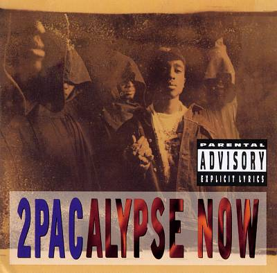
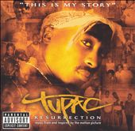
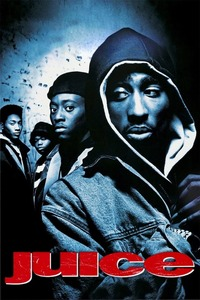
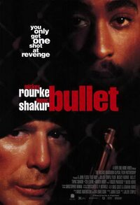
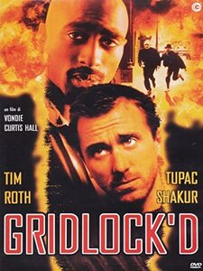

Tupac Amaru Shakur 2Pac nació en Nueva York, el 16 de junio de 1971 y murió en Las Vegas, Nevada, el 13 de septiembre de 1996. Es una leyenda en el rap. Con influencias desde la infancia por parte de sus padres, miembros del grupo Black Panthers. Gran parte de la obra de Shakur se ha destacado por abordar los problemas sociales que plagaban los centros urbanos, por lo cual también es considerado un símbolo de resistencia y activismo contra la desigualdad. Pasó gran parte de su niñez en continuos viajes a lo largo del país, en compañía de sus hermanos y su madre. A pesar de vivir en la pobreza, consiguió entrar en la prestigiosa escuela de Bellas Artes de Baltimore, donde, rapeando y actuando en directo, comenzó a desarrollarse su creatividad. Antes de su graduación tuvo que trasladarse junto a su familia a California. El primer disco de 2Pac llegó en el año 1992: se titulaba 2Pacalypse Now y llegó a ser disco de oro con el single Brenda's got a baby. Ya este primer disco provocó revuelo por sus letras. La popularidad de 2Pac aumentó considerablemente con su aparición en un par de películas, Juice y Poetic Justice. En el año 1993 se lanzó Stricly 4 my N.I.G.G.A.Z., segundo álbum del rapero, con el que consiguió colocar un par de singles en el top 15 estadounidense. Su carrera seguía una línea ascendente, pero varios incidentes la alteraron. Antes de dedicarse a la música, 2Pac no tenía ningún antecedente policial. En 1992 fue arrestado por su implicación en una pelea que acabó con la muerte accidental (por una bala perdida) de un niño de seis años, aunque fue puesto en libertad poco después. En 1993 se le detuvo acusado de disparar a dos policías que no estaban de servicio. El caso fue sobreseído, pero un mes más tarde fue acusado falsamente de abusar sexualmente de una admiradora en 1994. El día antes de que se hiciera pública la sentencia, fue tiroteado por un par de individuos en unos estudios de Nueva York, en el suelo reconoció a Puffy y Biggy, ellos no le ayudaron. Estaba en la cárcel cuando se editó su tercer álbum, Me against the world, que llegó al número uno y leyó El Príncipe de Maquiavelo, por el cual, más adelante, formará su partido político. Desde la cárcel, tras escuchar Who shot ya de B.I.G. Estaba seguro de sus sospechas. Antes de que acabara el año, Suge Knight, presidente de Death Row Records, pagó una fianza. Como era de prever, 2Pac fichó con la productora Death Row Records y debutó en el sello con All eyez on me (1996), un disco doble que llegó rápidamente al número uno, logrando el quinto disco de platino pasados unos meses. En verano de 1996 actuó además en dos películas, Bullet y Gridlock. A la salida de un combate de Mike Tyson en Las Vegas, en septiembre de ese año, fue tiroteado cuando iba en el asiento del copiloto del coche de Suge Knight. Herido de gravedad, fue ingresado en un hospital, donde falleció seis días después. Música   Peliculas ❮  ❯ ❮ ❯ ❮ ❯ ❮  ❯ ❮ ❯ ❮  ❯